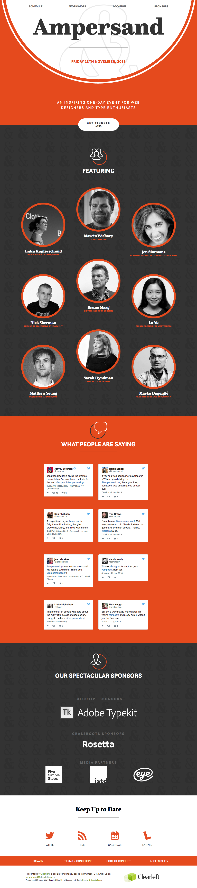
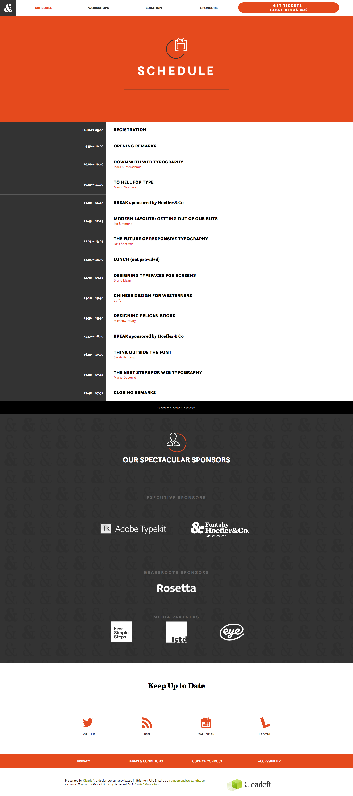
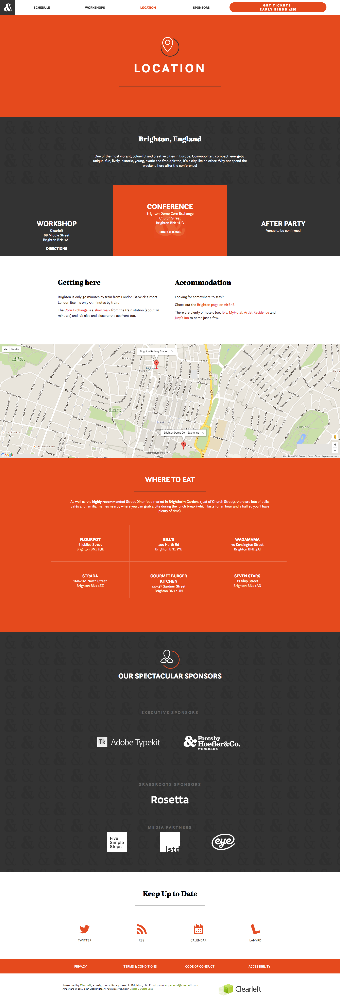

A website design for the UK's premier typography conference presented by Clearleft.
Client:
Clearleft
Role:
Visual Design
Scope:
Website
Featured:
Typewolf.com
I had the amazing opportunity to intern with Clearleft, one of the top web design agencies in the world, at their agency in Brighton, England.
One of my main projects while there was to design a unique, responsive, typography-focused website for Clearleft's annual Ampersand Conference. Visitors to the site needed to know the conference speakers, schedule, workshops, locations and sponsors.
At first, I felt as though I was fumbling through the project with the ever gracious and type-savvy Richard Rutter overseeing my work. I made mistakes from the get go, being over ambitious and jumping straight into mockups without sketching first.
Not all was lost however, and with new content and information coming into the project each week, I revised and adapted designs multiple times while learning a ton about grid layouts, content/mobile first and the beauty and subtly that is typography with the Questa font family at the center.
  